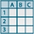

|
ESCI
|
Questo bottone va premuto per CHIUDERE
la Maschera ed Uscire dalla stessa |
|
STAMPA
|
Questo bottone va premuto per attivare la STAMPA dei
Record della Maschera
|
|
FILTRO ON
|
Questo bottone va premuto per attivare l'Applicazione
di un Filtro sui Record della Maschera |
|
FILTRO OFF
|
Questo bottone va premuto per disattivare il
Filtro applicato sui Record della Maschera |

|
SCELTA CAMPI
|
Questo bottone va premuto per attivare la SCELTA DEI CAMPI
da Gestire nella Maschera |
|
AGGIORNA
|
Questo bottone va premuto per ricaricare i
Campi scelti tramite il tasto di SCELTA CAMPI
|
|
LANCIA
|
Questo
bottone va premuto per CONFERMARE/LANCIARE
una Elaborazione |